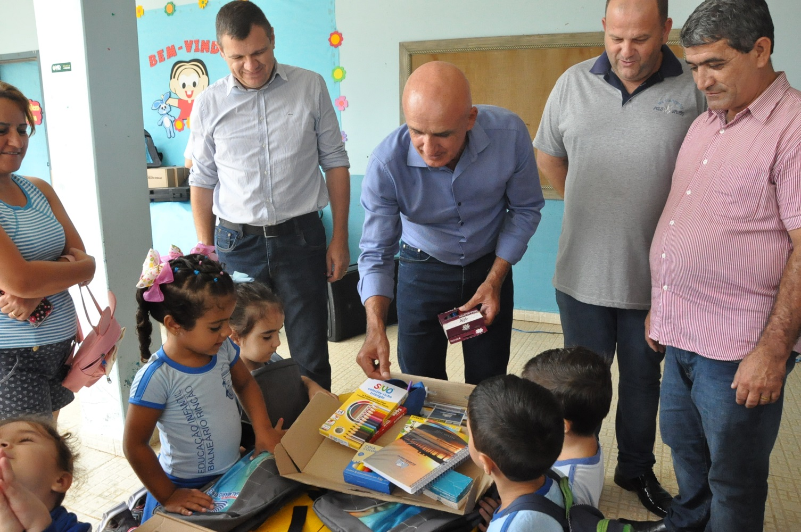
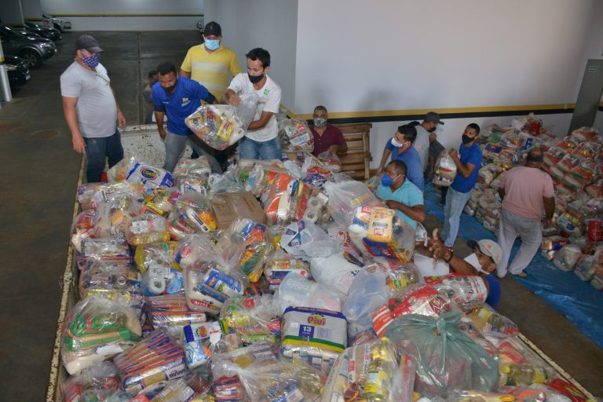

MATERIAL ESCOLAR Reunimos itens de material escolar para distribuir entre as crianças do projeto, contendo cadernos, canetas, lápis de colorir e de escrever e entre outros materiais essenciais pro ensino
CESTA BASICA Também reunimos cestas básicas, entregues as pessoas com dificuldades financeiras, para ajudar no mantimento alimentício básico dentro das casas dos integrantes do projeto 